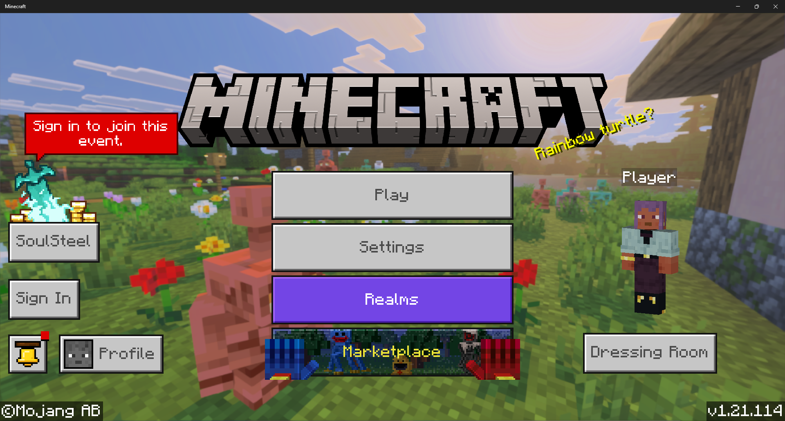

About Minecraft
What is Minecraft?
Minecraft is a sandbox game based all around creativity. You are in a blocky world, you can do many things such as, survive nights and fight monsters, create buildings and art, explore the world of blocks, and much more.
Minecraft's Release
The Initial release was May 17, 2009 by Markus "Notch" Persson, 2 years later it came to full release November 18, 2011 by Mojang Studios. In the first year of its release Minecraft already had around 500,000 monthly users. 2012 had around 1 million users. In 2016 around 20 millions users. Right now there are about 204 million users. The popularity of this game is crazy.
Extra Information
I first started to play Minecraft around 2013-2014. The game has changed a lot since then. The texture for almost everything has changed, it runs smoother and the worlds are much bigger. When I first started playing the world was about 864 x 864 blocks. I thought that was huge. Now there are 60 million x 60 million. That is a crazy world size difference.
Different Ways to Play
Devices
You now can get Minecraft on almost every device now. You can get on a computer or console even a phone or tablet. thought the game can differ a bit from device to device. The computer is the only one with a different Minecraft option on it other than Minecraft Bedrock Edition. It is called Minecraft Java Edition. I think this is the best one and it is modable for free. The main difference being how it is run but there are some different game mechanics to.
Multiplayer
There is a lot you can do with multiplayer. Multiplayer does change between Bedrock and Java Edition. Playing with others is easy on Bedrock you can join their wold directly with a click of a button but is is a little more difficult on Java. You can play together on LAN or servers. Servers can change how Minecraft is played. I won't go much more on servers because there is so much about them. There are mods for Java that lets you play together at a click of a button like Bedrock.
How to Play
Java
Once you load into the game you will see something like this, the background can be different depending if it updates

Click singleplayer and you will be in the world creation menu, if you already have on they will be on you screen. When creating you first world and this is your first time playing I recommend that you change the difficulty to peaceful or easy by clicking on the difficulty button. Then click on the World tab. I recommend turning on bonus chest for beginners, it give good starting loot. Then you can create you world, have fun.
Bedrock
Once you load into the game you will see something like this, the background can be different depending if it updates
Click play and you will be on the worlds tab, if you don't have one click the create new world button. You will then be on the world creation screen. If this time playing I recommend that you change the difficulty to peaceful or easy by clicking on the difficulty you want. Then click on the side tab called advanced. I recommend turing starting map, bonus chest ,and show coordinates on. Then you can click create new world and start playing, have fun.